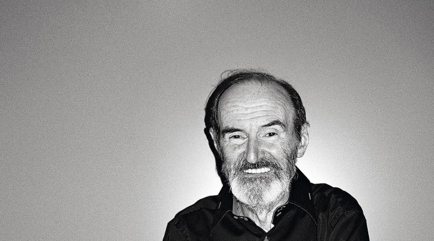
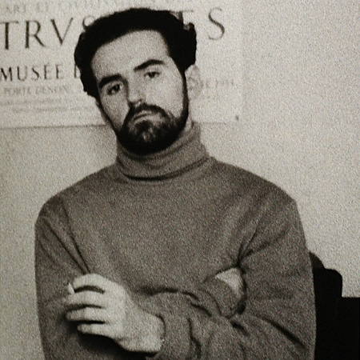
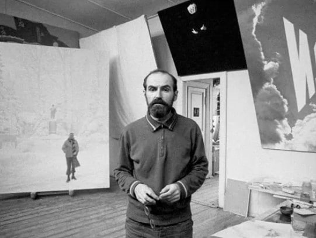
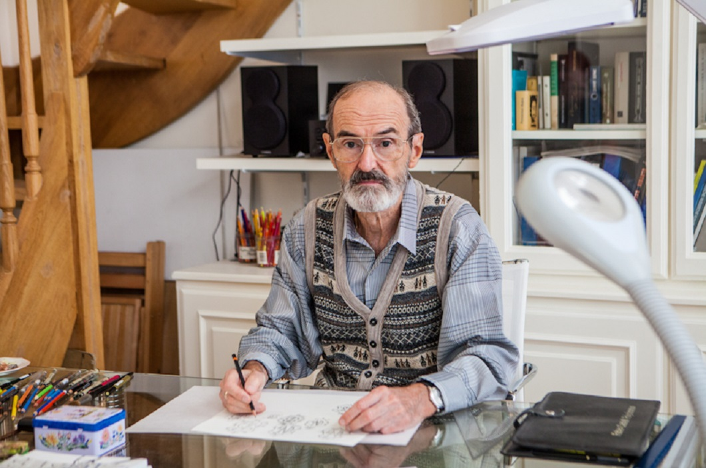
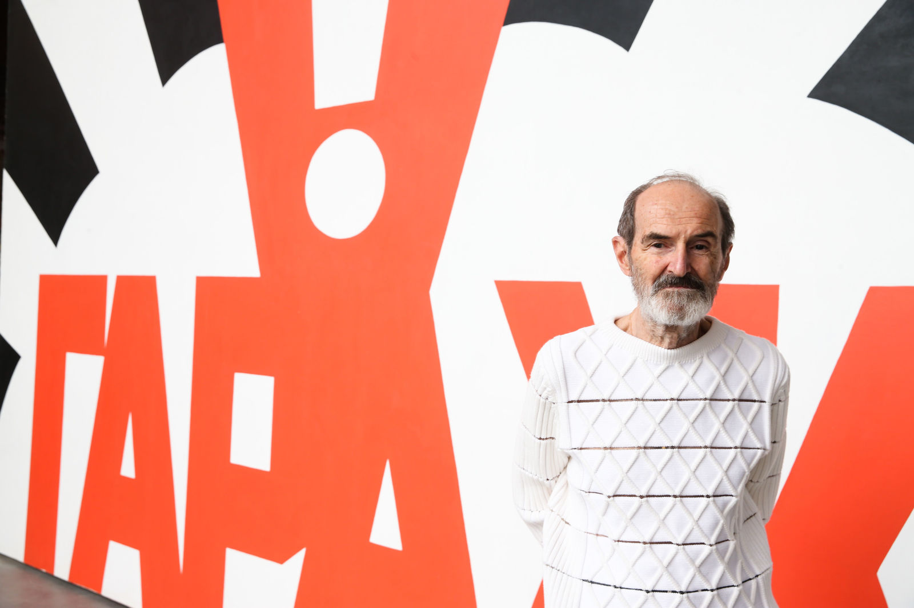
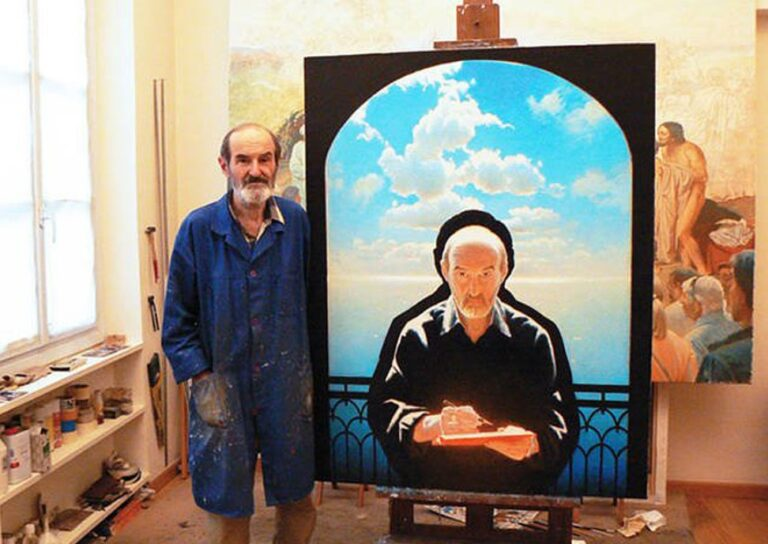
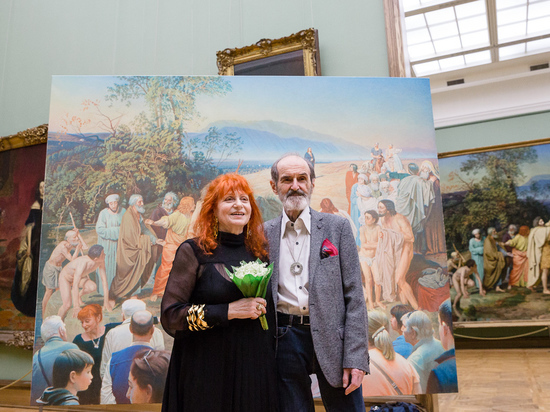

Биография
Эрик Булатов
Произведения
Выставки
Мерч
О нас

Эрик Владимирович Булатов
Эрик Булатов – советский и российский живописец, чьи работы обрели широкую известность только после распада СССР. С конца 1980-х проживает и работает во Франции.
Художник Эрик Булатов проявил свой талант сразу в нескольких стилях современного искусства. Он считается основателем таких направлений, как соц-арт, московский концептуализм и поп-арт. В настоящее время творец проживает в Европе, но старается как можно чаще возвращаться на родину – за новыми идеями и вдохновением.

Ранние годы
Знаменитый художник родился 5 сентября 1933 года в уральской столице – тогда еще Свердловске. Отец Эрика погиб на фронте во время Второй мировой войны.
Мать мальчика была польской эмигранткой и работала стенографисткой, несмотря на первоначальное незнание русского языка. До войны отец распознал в Эрике большой творческий потенциал и взял с супруги обещание, что она сделает все, чтобы сын получил профессиональное образование. После смерти мужа женщина исполнила его волю и отдала ребенка в Московскую художественную школу. Первая попытка поступить оказалась безуспешной, поэтому мальчик некоторое время занимался с педагогом Александром Михайловым.
Накануне вступительных экзаменов юноша заболел туберкулезом, лечить который его отправили в Крым. В санатории Булатов рисовал этюды, изображающие пейзажи прекрасного полуострова. Вернувшись домой, молодой человек предоставил эти работы в приемную комиссию художественной школы. Талант начинающего художника оценили, и вскоре он приступил к обучению. Окончив МСХШ, Эрик стал студентом Суриковского училища.

Художник-иллюстратор
Эрик жил в непростые для творческих людей времена. Когда умер Сталин, жизнь людей искусства стала немного свободнее, но советская власть свой тотальный контроль ослаблять не собиралась. Художникам навязывались определенные стандарты, нарушение которых могла привести к печальным последствиям. Подстраиваться под систему Булатов не хотел, одновременно понимая, что со своим свободомыслием он зарабатывать живописью не сможет. А так как никакой другой профессии у молодого человека не было, он брался за иллюстрации детских книжек.
На заре творческой биографии Эрик вместе с другом Олегом Васильевым работали в издательстве «Малыш». Совместно товарищи проиллюстрировали такие замечательные книги, как «Красная шапочка», «Золушка» и «Спящая красавица».

Живописец
Как вспоминает Эрик Владимирович, осенью и зимой он работал в издательстве, а в весенне-летний период возвращался к живописи. Ранние полотна автора практически никому не известны, так как на них был наложен запрет. Выставка работ художника состоялась только в середине 1960-х, да и то, длилась она не более получаса.
В те годы Булатова еще никто не знал, поэтому свои картины он показывал всем желающим совершенно бесплатно. Если удавалось продать какую-либо работу, это были очень скромные деньги. Первыми талант автора оценили заграничные любители искусства. Это произошло в конце 1970-х годов.
Когда в западных галереях начали появляться холсты советского мастера, люди заговорили о его уникальном стиле. После того, как работа «Горизонт» появилась на афише Венецианской биеннале, Эрик Владимирович проснулся знаменитым.
Полотна Булатова легко узнаваемы: их отличает лаконично совмещенный плакатный жанр с элементами живописи. Привычные для той эпохи советские лозунги автор помещал рядом с портретами людей и пейзажами. Некоторые искусствоведы считают, что своими работами Эрик Владимирович тайно боролся с абсурдностью окружающего мира, с его переизбытком пропаганды и пафосных тезисов.
Первую персональную выставку Булатов провел в Швейцарии. На мероприятии 1988 года были представлены десятки его картин, вывезенных за рубеж частными коллекционерами. Работы советского художника вызвали у публики неподдельный восторг, он стал получать приглашения на выставки в Нидерландах, Англии, Германии и Франции.

Среди десятков предложений Булатов выбрал сотрудничество с нью-йоркской галереей. Для мастера это был период небывалого творческого расцвета: он впервые мог спокойно работать, не оглядываясь на цензуру и давление властей. В Соединенных Штатах он практически не отрывался от работы, часами пропадая в своей мастерской. Чужая страна полюбилась художнику, но ее вскоре пришлось покинуть в силу личных обстоятельств.
После перестройки живописец провел успешную выставку в Центре Помпиду, после чего получил предложение о сотрудничестве от французского министерства культуры. Постепенно советский художник обосновался в Париже, где впоследствии создал целый ряд замечательных произведений.
В России шедеврами автора заинтересовались лишь с наступлением нового тысячелетия. В начале 2000-х Булатов провел первую выставку графических работ, а вскоре представил живописные полотна в знаменитой Третьяковке. Картины мастера так понравились соотечественникам, что он стал периодически привозить их на родину.
Со временем Эрик Владимирович обрел репутацию одного из самых востребованных современных живописцев. Его работу «Брежнев. Советский космос» на аукционе оценили в 1,6 млн. долларов, другие полотна советской тематики уходили не менее, чем за миллион долларов каждая. К самым известным полотнам художника относятся «Свобода» и «Лувр. Джоконда».
В 2020-м Булатова пригласили принять участие в создании мурала на здании нижегородской Выксы. В композицию вошли произведения автора «Амбар в Нормандии» и «Стой и иди», ширина шедевра составила более ста метров.

Герой документальных лент
Непростая судьба творца продолжает вызывать большой интерес документалистов. Биография Булатова вошла в цикл «Художник говорит», посвященный знаменитым мастерам 20-го столетия. В этом фильме прозвучал рассказ о личной жизни живописца и о его верных друзьях, оказавших поддержку в самое нелегкое время.
В 2018 году Первый канал показал документальную ленту «Живу и вижу», героем которой стал Эрик Владимирович. Проект представлен в виде диалогов с Анатолием Малкиным – известным российским телеведущим и продюсером.

Личная жизнь
Известно, что художник был женат несколько раз, однако подробностей личной жизни он раскрывать не любит.
В 1978 году Булатов женился на Наталье Годзиной, которая стала матерью его сына. В настоящее время супруги неразлучны.